Laravel merupakan salah satu framework PHP yang populer dan banyak digunakan dalam pengembangan aplikasi berbasis web. Framework ini dikembangkan oleh Taylor Otwell dengan menerapkan arsitektur MVC (Model–View–Controller) yang bertujuan mempermudah proses pengembangan aplikasi agar lebih terstruktur, efisien, dan mudah dipelihara. Laravel menyediakan berbagai fitur bawaan seperti routing, middleware, autentikasi, validasi form, hingga ORM Eloquent yang memudahkan interaksi dengan database. Dalam pengembangan aplikasi modern, Laravel menjadi pilihan karena memiliki sintaks yang sederhana, dokumentasi yang lengkap, serta dukungan ekosistem yang luas. Selain itu, Laravel juga mendukung penggunaan Blade Template Engine, Artisan CLI, dan sistem keamanan yang membantu pengembang membangun aplikasi web secara cepat dan aman. Pada praktikum ini dilakukan proses instalasi dan pengenalan dasar framework Laravel, mulai dari persiapan lingkungan pengembangan, instalasi tools pendukung seperti XAMPP, Composer, Git, dan Node.js, hingga pembuatan project Laravel pertama. Melalui praktikum ini diharapkan mahasiswa dapat memahami konsep dasar Laravel serta mampu membuat dan menjalankan project berbasis framework Laravel dengan baik.
Lihat di GitHubSebelum memulai instalasi Laravel, pastikan bahwa XAMPP, Composer, Git, dan Node.js sudah terinstall di perangkat. Cek dengan menjalankan perintah berikut di terminal:
php -v (untuk PHP) composer -v (untuk Composer) git --version (untuk Git) node -v (untuk Node.js) 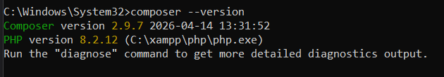
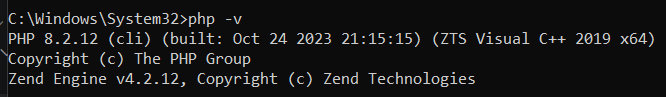
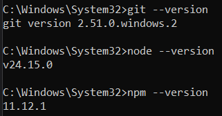
Ada beberapa cara untuk membuat project Laravel yaitu kita menggunakan installer atau
menggunakan composer. Disini saya menggunakan composer.Buat project Laravel menggunakan perintah berikut.
composer create-project laravel/laravel=^12 nama-project --prefer-dist
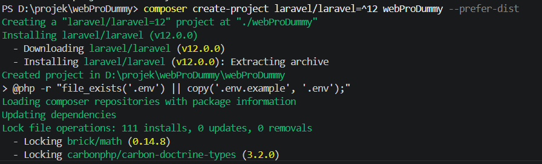
setelah berhasil membuat project Laravel, selanjutnya masuk kedalam directory project Laravel dan ketikan perintah berikut.
cd nama-project (untuk masuk ke directory project) npm install (untuk menginstal dependensi Node.js) npm run dev (untuk menjalankan development server) composer run dev (untuk menjalankan development server Composer) 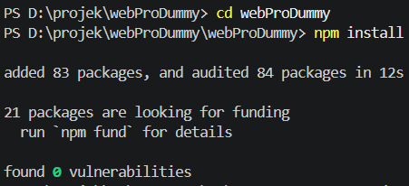
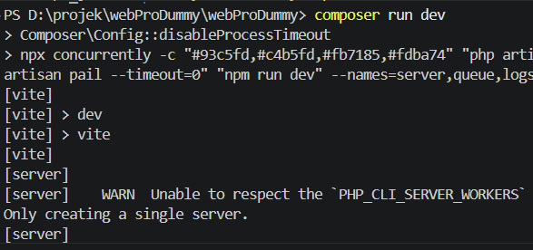
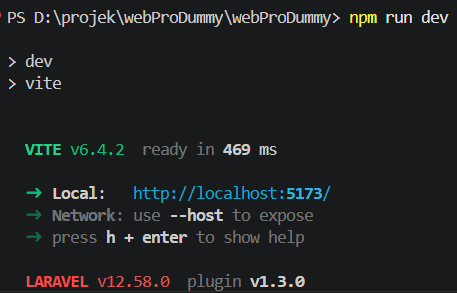
Untuk menjalankan project Laravel yang telah dibuat, gunakan perintah php artisan serve.
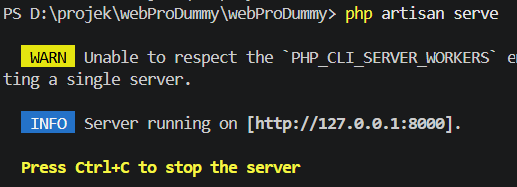
Jika berhasil, maka akan muncul pesan bahwa server Laravel telah berjalan di alamat http://127.0.0.1:8000.
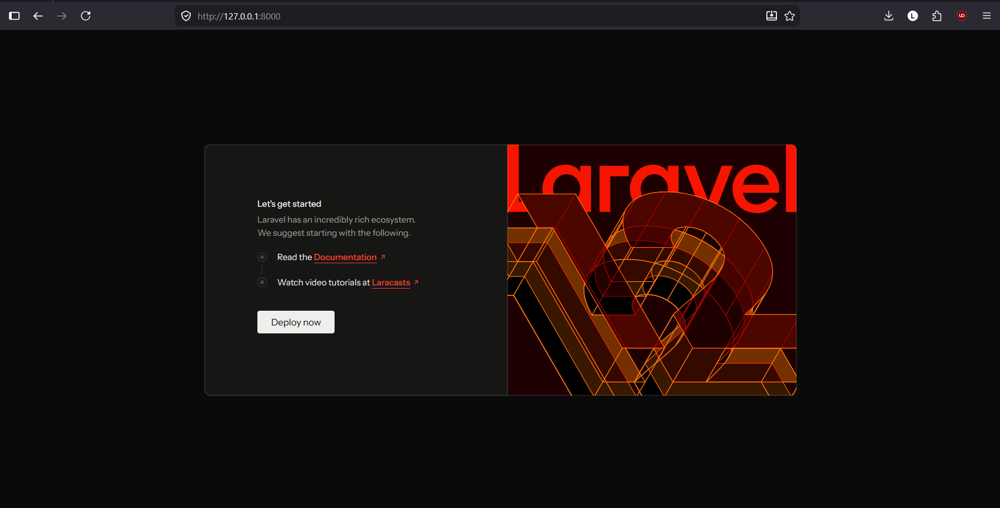
Route digunakan untuk mendefinisikan endpoint dalam aplikasi Laravel. Untuk membuat route baru, kita dapat menambahkan kode berikut ke file routes/web.php:
Route::get('/halo', function () { return 'Hello World!'; });
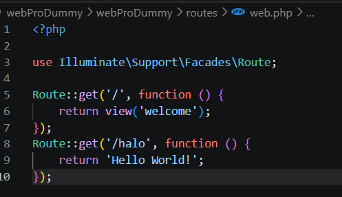
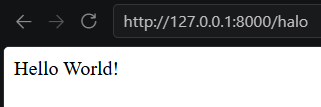
Model berfungsi untuk mengakses dan mengelola data / database seperti query ke database, insert,
update, delete dll untuk menggunakan:
php artisan make:model nama-model
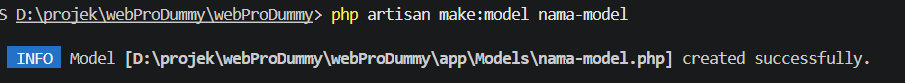
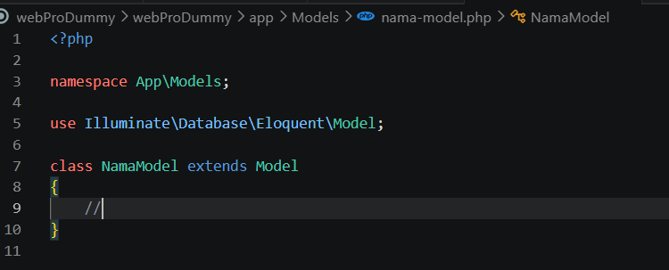
Berfungsi sebagai tampilan atau antarmuka aplikasi, yaitu menampilkan data yang
didapatkan dari suatu model melalui controller
php artisan make:view nama-view
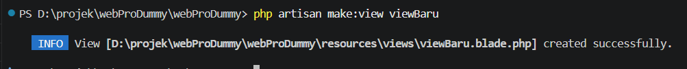
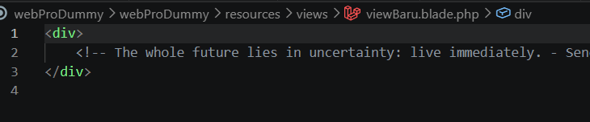
Berfungsi untuk menangani request dan response, menerima request dan memproses
request kemduian mengembalikannya dalam bentuk data atau view dari suatu model.
php artisan make:controller nama-controller
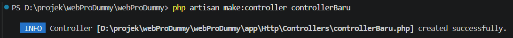
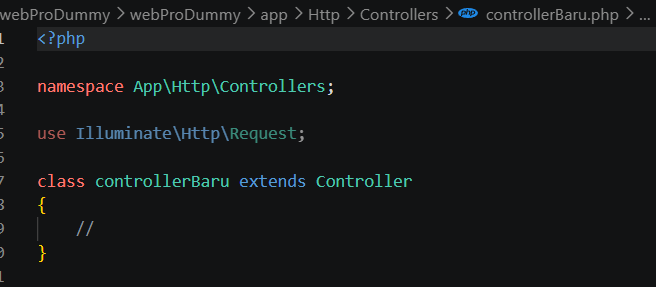
Berdasarkan praktikum yang telah dilakukan, dapat disimpulkan bahwa Laravel merupakan framework PHP yang sangat membantu dalam proses pengembangan aplikasi web karena menggunakan konsep MVC (Model–View–Controller) yang membuat struktur program menjadi lebih terorganisir. Laravel juga menyediakan berbagai fitur bawaan seperti routing, middleware, Blade Template Engine, dan Eloquent ORM yang mempermudah pengelolaan database serta pengembangan antarmuka aplikasi. Selain itu, proses instalasi Laravel membutuhkan beberapa tools pendukung seperti XAMPP, Composer, Git, Node.js, dan NPM agar lingkungan development dapat berjalan dengan baik. Setelah melakukan instalasi dan konfigurasi, project Laravel dapat dibuat dan dijalankan menggunakan perintah Artisan. Dengan praktikum ini, mahasiswa dapat memahami dasar penggunaan Laravel serta mengetahui tahapan awal dalam membangun aplikasi web menggunakan framework Laravel.